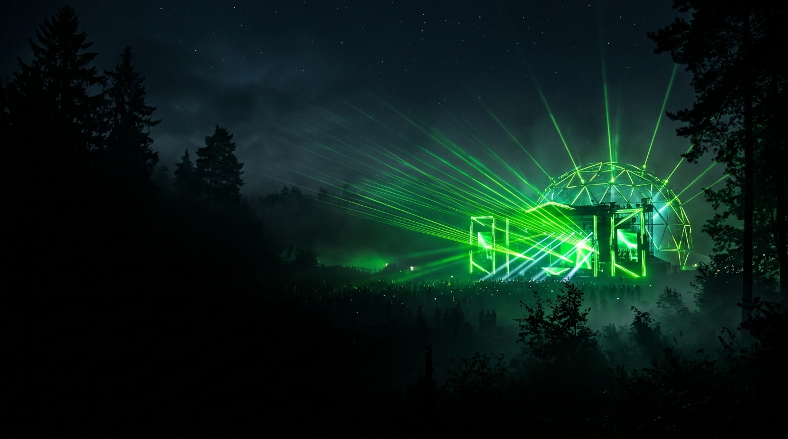

Open-air main stage
Cap. 4,500
Solar Horizon Stage
Central open-air amphitheater for major band performances, indie rock, and dance headliners from early afternoon until 02:00.
View Solar Horizon schedule →
Electronic, alternative, and audiovisual music across two distinct stages in Kutná Hora. Sixty sets from afternoon light into deep morning hours.
Move between open-air amphitheater acoustics and a 360-degree covered audiovisual dome.
Central open-air amphitheater for major band performances, indie rock, and dance headliners from early afternoon until 02:00.
View Solar Horizon schedule →Atmospheric covered indoor stage focusing on techno, ambient, experimental electronics, and 360-degree light projections until 04:00.
View Lunar Forest schedule →A cross-section of artists from Czechia, Germany, UK, Sweden, France, and beyond.
Nu-Disco / Funk · Solar Horizon Stage
Industrial Techno · Lunar Forest Dome
Indie Dance · Solar Horizon Stage
Progressive Dance · Solar Horizon Stage
Electropop Headliner · Solar Horizon Stage
Orchestral Electronic · Solar Horizon Stage